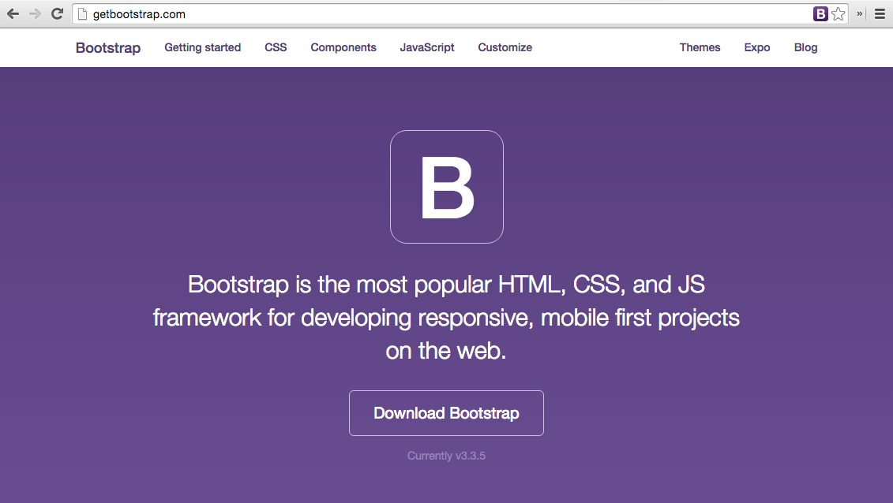
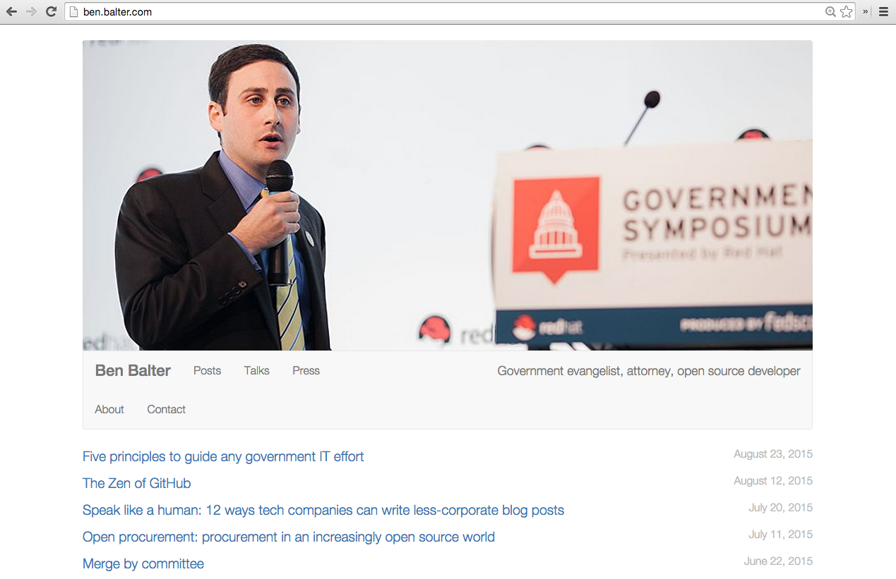

Building a Personal Website with Github Pages
Taught by Bryan Braun / @BryanEBraun
Why a Personal Site?
- A place to experiment
- A place to write
- Claim your name. Control your message.
- Build it before you need it
100s of Options
Wix - Wordpress - Joomla - Squarespace - Django - Drupal - Rails - Express - Sinatra - Hexo - Jekyll - Octopress - Postachio - Hugo - Weebly - Pancake - Pelican - Middleman - Blogger - Google Sites - October - Ghost - Harp - About.me - Yola - Assemble - Craft - Tumblr - Hubpress - Grav - Medium - Hubpages - Svbtle - Posthaven - Pico - Statamic
...
Github Pages
What is it?
It's free static site hosting provided by Github.
Why Github Pages?
- Uses developer workflows
- Full control of your design & content
- Ease of migration
- Embraces openness
- Large Plugin Ecosystem
- Low Complexity
- Secure
- Scalable
- Backups built in
- No comment spam
- Free
The Case Against Github Pages
- You can't use it to experiment with Backend / Databases / Caching / Servers / Ops
- Favors Jekyll, which you may not want (like if you aren't interested in Ruby, for example)
- Some features must use 3rd party JS plugins
- Favors control over convenience.
- Not a strong theme ecosystem.
Sites using Github Pages

Sites using Github Pages
Sites using Github Pages

Sites using Github Pages

Sites using Github Pages
Getting Started
Options for making it look nice:
1. Style it yourself.
Options for making it look nice:
2. Start with a Github Template

Options for making it look nice:
3. Browse static templates online
- Collections, like Templated & HTML5Up
- Bootstrap Themes
- Paid Theme Marketplaces, like Themeforest
Limitations of Static Sites:
Writing in HTML can get tiresome
New Post: Broken Windows in your Code
A
popular theory on criminal behavior postulates that a
broken window left unfixed, leads to rapid deterioration in a
neighborhood.
The reasoning is that the broken window sends signals to anybody
who sees it, indicating the degree to which the community tolerates
disorder.
A good framework or a good architecture makes it hard to
do the wrong thing.
Limitations of Static Sites:

Enter Jekyll